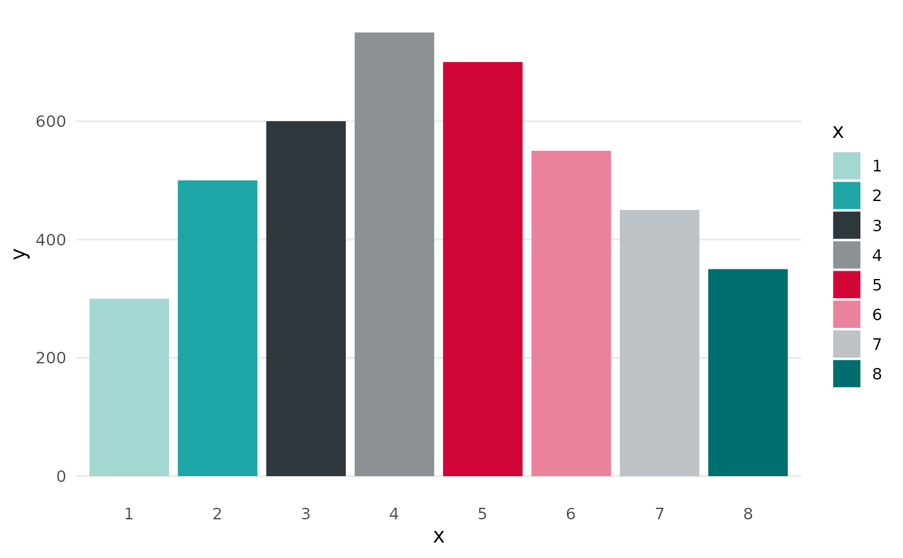

ggplot2 plot theme based on colors of UNIBAS
Usage
theme_unibas(base_theme = ggplot2::theme_minimal(), base_size = 12, ...)Arguments
- base_theme
A base theme upon which additional theme-specific options are applied
- base_size
Base font size, defaults to 12, passed to theme
- ...
Further arguments passed to
ggplot2::theme()
Examples
library(ggplot2)
df <- data.frame(x = as.factor(1:8),
y = c(300, 500, 600, 750, 700, 550, 450, 350))
ggplot(df, aes(x, y, fill = x)) +
geom_col() +
scale_fill_unibas_d() +
theme_unibas()
